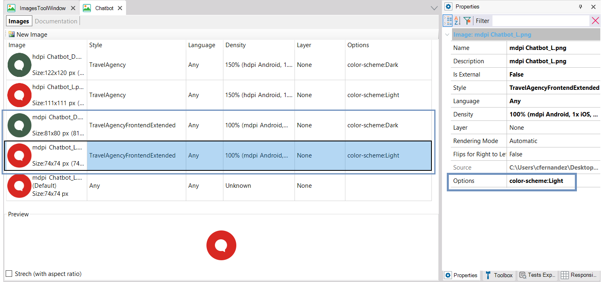

Image variation by Tokens options
The Image object allows you to vary its content (the specific image to be displayed at runtime) according to the Theme or Design System Object (DSO) associated with the object containing the image.
To do so, the specific image is entered into the object, and the Theme or Design System Object is specified in the Style property.
It can also be varied by language, screen density, layer, and, in the case of a DSO that has parameterized options for the Tokens, by the values of these options.
In the following example, the Chatbot image of the KB is being edited. It contains 5 variations, and the last one of them will be applied if none of the others is chosen.
Note that when the Style is the DSO named "TravelAgencyFrontendExtended," the language is any language, and the density is 100%, an image with red color has been defined when the color-scheme option is Light. On the other hand, a green one is defined when all other parameters match but the color-scheme option is Dark.

This will cause one or the other to be used depending on the value of the option at runtime:

So, you can think of the image as a Token that is defined elsewhere, in another way, in the image editor.
Availability
Since GeneXus 17 Upgrade 6.
See Also
| Backlinks | |
| Design System Tokens Options | Toc:Design Systems |